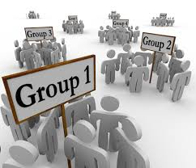

Coming into HighSchool it is very hard not to form cliques. People often form cliques by their second year of highschool. It is perfectly okay to have cliques, however it is also very important to try to talk to people that are not in your clique; you might be suprised as to who you end up meeting. Your sophmore year, however, is where cliques often go through friend problems.
Cliques are just like a relationship, and in every relationship, people fight, get in arguments, and "breakup". Make sure you surround yourself with people who will want to see you rise up rather than fall down. Align yourself with someone who achieves to be a better person and who has the same goals as you. Keep in mind that if they were meant to be your friend, then they will act like your friend and be there for you and vise-versa.

However, make sure that your clique does not end up being the mean clique. Make sure to be nice to everyone. You do not have to be friends with everyone but make sure that you show everyone respect.
Dealing With Cliques/Center for Young Woman's Health
Yes, I'm in a clique/New York Times
Helping Your Teenager Through High School (useful for parents and teenagers alike)